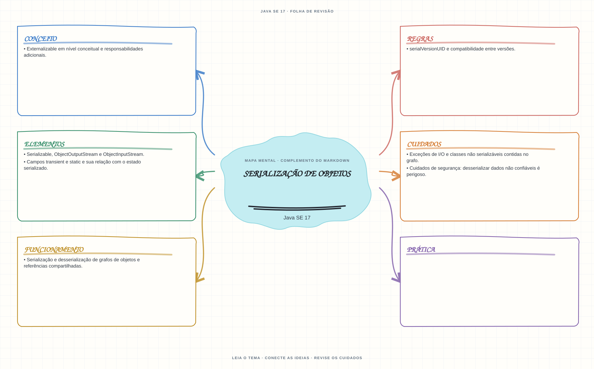

Ver mapa mental deste assuntoRastrear o estado serializado de objetos e reconhecer riscos de compatibilidade e segurança.
Aprofundamento e revisão 1Z0-829: use esta página depois dos fundamentos. Os tópicos de prova complementam a trilha inicial e não são pré-requisitos para começar a programar.
- Leia o objetivo e localize a ideia principal no conteúdo abaixo.
- Preveja o resultado, compile e execute o exemplo.
- Faça a atividade sem copiar a solução e confira a checagem comentada.
EXEMPLO DE CONSOLE
Veja a regra em execução
Antes de executar, anote sua previsão. Compile o exemplo com o JDK e compare a saída observada com as regras deste assunto.
Comandos para compilar e executar
javac -d target/bin src/09-io/serializacao/SerializacaoExample.java
java -cp target/bin SerializacaoExampleA execução imprime o resultado no console para você comparar com sua previsão.
Consultar código-fonte: SerializacaoExample.java
import java.io.ByteArrayInputStream;
import java.io.ByteArrayOutputStream;
import java.io.IOException;
import java.io.ObjectInputStream;
import java.io.ObjectOutputStream;
import java.io.Serializable;
public class SerializacaoExample {
private static class Estudante implements Serializable {
private static final long serialVersionUID = 1L;
private final String nome;
private final int modulo;
private transient String senhaTemporaria;
Estudante(String nome, int modulo, String senhaTemporaria) {
this.nome = nome;
this.modulo = modulo;
this.senhaTemporaria = senhaTemporaria;
}
@Override
public String toString() {
return "Estudante{nome='" + nome + "', modulo=" + modulo
+ ", senhaTemporaria=" + senhaTemporaria + "}";
}
}
public static void main(String[] args) throws IOException, ClassNotFoundException {
System.out.println("=== Serializacao de objetos ===");
System.out.println("Somente objetos Serializable podem ser gravados; transient nao e persistido.");
Estudante original = new Estudante("Alex", 3, "nao-serializar");
byte[] bytes;
try (ByteArrayOutputStream buffer = new ByteArrayOutputStream();
ObjectOutputStream saida = new ObjectOutputStream(buffer)) {
saida.writeObject(original);
bytes = buffer.toByteArray();
}
try (ObjectInputStream entrada =
new ObjectInputStream(new ByteArrayInputStream(bytes))) {
Estudante recuperado = (Estudante) entrada.readObject();
System.out.println("Objeto original: " + original);
System.out.println("Objeto recuperado: " + recuperado);
System.out.println("A senha temporaria foi restaurada como null por ser transient.");
}
}
}
PRATIQUE AGORA
Faça uma pequena alteração por conta própria
Torne uma classe simples serializável, grave uma instância e leia-a de volta; observe um campo transient.
Concluído quando: o programa compilar, produzir o resultado esperado e você conseguir explicar a regra aplicada.
CHECAGEM RÁPIDA · Serialização de objetos
Um campo static faz parte do estado serializado de cada objeto?
Conferir resposta comentada
Não como estado da instância: static pertence à classe. Campos transient também são excluídos da serialização padrão; dados não confiáveis não devem ser desserializados sem proteção.
Estude
Serializable,ObjectOutputStreameObjectInputStream.- Serialização e desserialização de grafos de objetos e referências compartilhadas.
- Campos
transientestatice sua relação com o estado serializado. serialVersionUIDe compatibilidade entre versões.- Exceções de I/O e classes não serializáveis contidas no grafo.
Externalizableem nível conceitual e responsabilidades adicionais.- Cuidados de segurança: desserializar dados não confiáveis é perigoso.
Prática
Serializar e recuperar um objeto simples; compare os valores de campos normais, transient e static antes e depois.
Como este capítulo se relaciona com cada exame
Fundamentos reaproveitáveis; valide APIs e objetivos específicos de Java 8.
Base de estudo deste portal; confirme o mapeamento com o blueprint vigente.
Conceitos úteis; confira APIs e requisitos atualizados de Java 21.
Orientação editorial sobre reaproveitamento do material; não representa objetivos oficiais nem garante cobertura do exame. Consulte o comparativo e as fontes da Oracle.